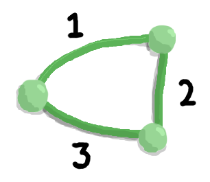

What is a Minimum Spanning Tree?
A minimum spanning tree of a graph is a sub-graph that contains all vertices, and has exactly one path from any one vertex to another.
Let's first explore some spanning trees.
Take a look at this graph...
In this graph, there are 2 paths we can take to get from any vertex to any other vertex. That is, we can either take one edge, or go through the third vertex and take two edges.
But let's say we don't want this redundancy and we just want exactly one path of edges between any two vertices. To achieve this, we can remove any one of the three edges.
These are all spanning trees. There is exactly one path from a vertex to another vertex (it's a tree), and all the original vertices are included (it's spanning).
But out of these three spanning trees, there is one with the lowest total edge weight — the tree without the edge of weight 3. It has a total edge weight of 3 (1 + 2). This is the minimum spanning tree.
In this case there was exactly one minimum spanning tree. But in other graphs, there may be multiple minimum spanning trees.